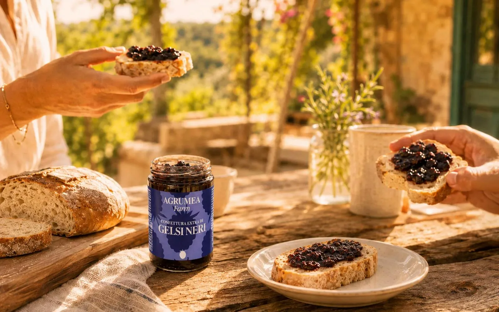
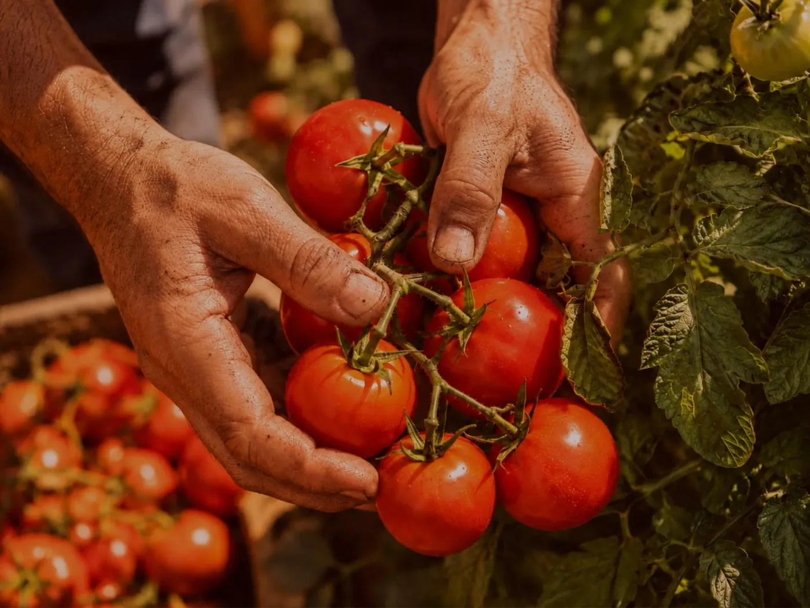

Azienda Agricola · Floridia, Sicilia
Sicily,kept in glass.
A small Sicilian farm, a slow kitchen, and fruit picked at its peak. Marmalades, pestos and preserves made in Floridia, one batch at a time.

Breakfast, as it should be.
Gelso nero · Floridia
 Arancia · Orange marmalade
Arancia · Orange marmalade
Scroll to discover
Fruit at its peak. Nothing to hide. Time to do the rest.
We grow oranges, lemons, almonds and pistachios in the red soils of the Iblei. We pick by hand, cook in small batches, and stop when the fruit tastes like itself.
No colourings. No thickeners. No shortcuts. Just fruit, sugar, and the patience the recipe asks for.
How we make itThe pantry
Jars with a sense of place.



02 · Our story
Not a brand. A promise we keep each season.
Our grandfather planted his first citrus grove a few kilometres from Floridia. Three generations later, we still tend those trees by hand — and we still believe that good fruit needs nothing more than time and care.
In 2018 we converted the farm to organic practice, built our own kitchen, and closed the circle from grove to jar. The scale changed. The standard did not.
Meet the family1968
First citrus grove
2018
Organic conversion
100%
Grown & made in Sicily
The collection
Three ways to the table.
Every jar begins with a harvest. These are the three families it becomes.
Marmalades & jams
Fruit, peel and sugar cooked slowly together. Breakfast, cheese, or straight from the spoon.
Spreadable creams
Sicilian almonds and pistachios, ground until silk. A little indulgent, entirely natural.

Savoury preserves
The vegetable garden in a jar: caponata, pestos and agrodolce onions for the table.